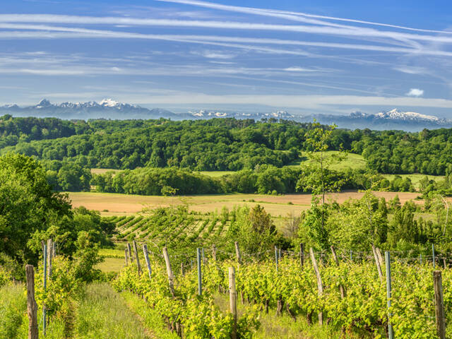
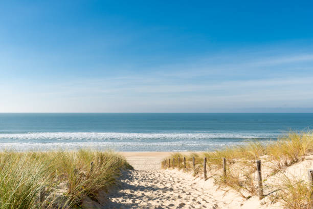
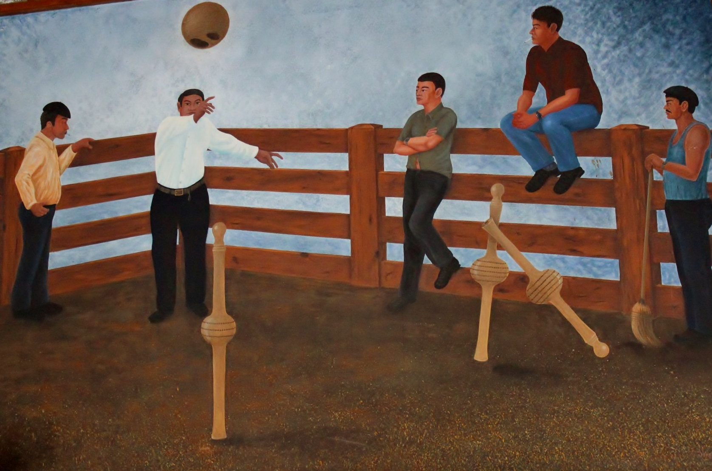
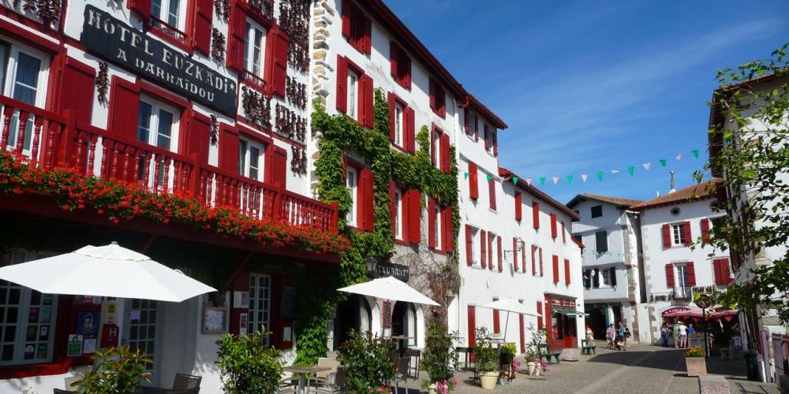
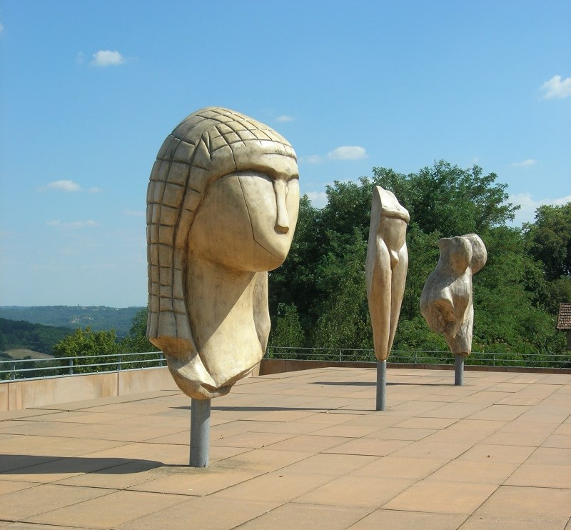
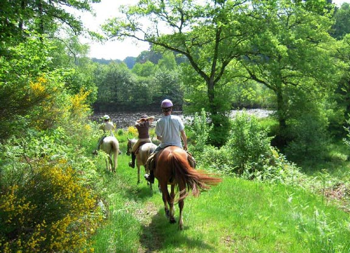

Le Surf

La Chalosse
La Maison de la Vannerie

L'océan
Les fêtes de village

Le quillier de 9
Espelette
ArchéoParc de la Dame
Les promenade à cheval
La randonnée

Le Musée de la Chalosse

A proximité des activités trés variées vous attendent, balades équestres, circuits randonnées, visites patrimoniales comme le château et Plantarium de Gaujacq, la Maison et ArchéoParc de la Dame, la Maison de la Vannerie, le quillier de 9, l'océan...